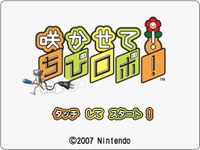
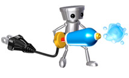
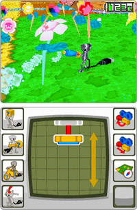
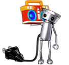

森山：主に開発に参加していたのは、スキップ側はここにいる４人とサウンド担当１名を含めた計５名です。そのうち僕、田中、大下の３人は、ゲームキューブの『GIFTPIA』の頃から一緒に作ってました。これを話すと誤解されるかもしれませんが、昔から仕様書というのを交わさないチームでして。目標はなんとなく共有しておいて、ある日、各々が作ったものをガンッと組み合わせていくというスタイルなんです。
田中：現場ではアドリブ進行だねって言ってます。正直、なんか勝手にやっている部分も多かったですね。
森山：そうなんです。こちらのプロット（筋書き）をもとにキャラクターのアニメを「よろしくー」って頼むと、２〜３日後には「できたよー」という田中のメールが届くんですね。で、見てみると、こちらの考えていたものと少し違うんです。でも、ズレすぎてない。むしろ「あっそう来たのね」という感じで。
田中：「どのくらいできるの？」というメッセージをこめているんです。相手にプレッシャーを与えたいじゃないですか（笑）。
森山：そして、こっちも相手のアドリブを活かすために工夫をさらに加えて返してみる。（ソフトの出来を確認する）ロムチェックのときに初お披露目してみんなが笑えばＯＫって感じです。って言うとかっこいいんですけど・・・白状すると実はよくプレッシャーに負けそうになってました。「こんなの返せねー！」と。
田中：そうですね。大きなオーケストラだと味わえない醍醐味かもしれません。
上田：ただそのジャズセッションを始めるまでは苦労しました。まさに紆余曲折といいますか。
始まりは、ニンテンドー ゲームキューブ版の『ちびロボ！』の開発直後に、当時、独立して事務所を構えたばかりの森山さんたちと一緒に企画を考え始めたころです。でも、企画を練り始めた当初は、勢いだけで企画をまとめていたので、企画を今作の任天堂側のプロデューサーである田邊に見せては、「ゲームとしてはどうなの？」と言われ、一同シーンとしてしまう、といったことのくり返しでした。
（※詳しくは
開発秘話にて）
森山：その中で、任天堂さんから「原っぱ」というテーマをもらい、そこで原っぱでちびロボに何をさせるかということになって。前作の歯ブラシみたいな存在として「ちびシャワー」というアイテムが今作に出てくるんですけど、そのちびシャワーで荒れちゃった原っぱに花を咲かせていくと原っぱに緑がよみがえってくる。それでちびロボもハッピーになる。その後に原っぱが公園に変わったんですが、これがコンセプトになりました。
アクション操作は全部タッチペンで行うというのは最初から決めていたので、まずはプログラマーの菊地に頼んで、数日で、タッチペンの操作で、ちびロボが花に水をやるというサンプルプログラムを作ってもらったんですけど、これが、ほんっとに、気持ちよかったんです。

田中：それでちびシャワーの操作感が気持ちいいことから始めてみようかって。
上田：最終的には水の量や出方に若干修正を加えてはいるんですけど、製品版のちびシャワーはサンプルから大きく変わっていないんです。
菊地：プログラムとしても「気持ち良い」という感触を第一に考えました。操作そのものがちびロボの動きにキチンと反応することが大切で、ちょっとシャワーを使うときは水もちょっとだけ出てくる。一生懸命動かしたら、ちびロボもガシガシ水をやるという動きを表現したくて。いわば（プレイヤーの動きとちびロボのアクションの）リンク感とでもいいましょうか。
大下：今回、公園には最終的にかなりたくさんの花を咲かせることになるんですけど、これ結構飽きないんですよね。気持ちいい単純な動作って、何気にダラダラでも、ずぅーっとやっちゃうんですよね。
森山：これでやっと「今回は何のゲームですか」と聞かれたら、「花を咲かせるゲームです！」とはっきりと答えられるようになりました。でも、それはそれでよかったんですが、水をあげて花を育てるのは常識だから、プレイヤーが作業のように感じてしまうかも？ という見方も出てきたんです。そこで実験のときに没になってたダンスを「いれちゃえー」って感じでゲームに組み込んだらこれが意外に面白かったんで、そのまま復活させることにしました。アドリブ…っていうか偶然ですね。

田中：僕はマイケル・ジャクソンが好きで、彼が主演した『ムーンウォーカー』という映画では踊りながら悪のギャング団を倒すという場面があるんです。それと同じで、ちびロボが踊りながら花々を元気にさせる。このゲームだからこそできるファンタジーって、そこかなと思ったんです。
森山：そうしてマイケルと偶然のおかげもあって「水でお花を咲かせて、ダンスで種をまく」というかたちでいくことになりました。
田中：ちびロボのダンスはたくさん用意していますが、ダンス好きな上田さんの要望でロボットダンスを入れてあるんです。理由は「ロボットなのにロボットダンスって最高じゃない？」ってことらしいです（笑）。